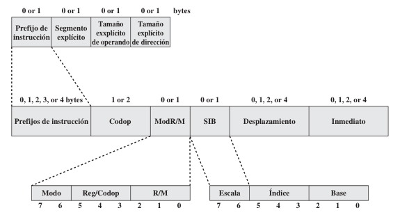

2.6 Arquitectura x86
La arquitectura x86, una de las más influyentes y ampliamente utilizadas en el ámbito de las computadoras de escritorio y servidores, comenzó su desarrollo en 1978 con el lanzamiento del procesador Intel 8086, que introdujo una arquitectura de 16 bits. La arquitectura x86 evolucionó significativamente con el Intel 80386 en 1985, marcando el inicio de la era de 32 bits. En 2003, AMD lanzó la arquitectura AMD64, extendiendo x86 a 64 bits, lo que permitió un mayor acceso a la memoria y un mejor rendimiento en aplicaciones intensivas. Intel adoptó estas innovaciones, consolidando la arquitectura x86 como una de las más versátiles y potentes del mercado (Stallings 2013, @intel_64_2016; AMD 2019; Abel 2000).
2.6.1 Evolución de la arquitectura x86
La retrocompatibilidad de la arquitectura x86 ha sido un factor determinante en su éxito, permitiendo que aplicaciones de 16, 32 y 64 bits se ejecuten en el mismo sistema. Esta característica ha asegurado la continuidad y protección de las inversiones en software y sistemas operativos desarrollados para x86.
La retrocompatibilidad de la arquitectura x86 ha sido un factor determinante en su éxito, permitiendo que aplicaciones de 16, 32 y 64 bits se ejecuten en el mismo sistema. Esta característica ha asegurado la continuidad y protección de las inversiones en software y sistemas operativos desarrollados para x86.
| Procesador | Año.de.Lanzamiento | Número.de.Bits | Nuevas.Características |
|---|---|---|---|
| Intel 8086 | 1978 | 16 | Arquitectura inicial |
| Intel 80386 | 1985 | 32 | Memoria virtual |
| AMD64 | 2003 | 64 | Extensiones de 64 bits |
La evolución de la arquitectura x86 ha estado marcada por hitos importantes que han impulsado la informática hacia nuevas alturas. Tras el Intel 8086, el lanzamiento del Intel 80286 en 1982 introdujo modos de operación adicionales que mejoraron la eficiencia y el manejo de memoria. En 1989, el Intel 80486 incorporó una unidad de punto flotante integrada y una mejor caché, aumentando significativamente el rendimiento.
La serie Pentium, iniciada en 1993, llevó la arquitectura x86 a nuevos niveles de rendimiento y eficiencia, con características avanzadas como la ejecución superescalar y la predicción de saltos. El Pentium Pro en 1995 mejoró la arquitectura con ejecución fuera de orden y una caché L2 integrada.
En la década de 2000, la arquitectura x86 se adaptó a las demandas de la computación moderna con la introducción del Intel Core, optimizando el rendimiento y la eficiencia energética. AMD también fue crucial con su serie Athlon y la introducción de AMD64, llevando la arquitectura x86 a 64 bits, permitiendo un mayor acceso a la memoria y mejorando el rendimiento en aplicaciones intensivas.
La arquitectura x86 ha tenido un impacto profundo en el desarrollo de software. Los sistemas operativos populares como Windows y Linux están optimizados para x86, lo que ha influido en el desarrollo y la optimización de aplicaciones para esta arquitectura.
- Influencia en el desarrollo de software: Los desarrolladores de software han trabajado estrechamente con las características de la arquitectura x86 para optimizar el rendimiento de sus aplicaciones. Esto incluye el uso de instrucciones específicas de x86 y la optimización para cachés y pipelines.
- Compatibilidad y soporte: La compatibilidad hacia atrás de x86 ha permitido la continuidad de aplicaciones y sistemas operativos, protegiendo las inversiones en software y facilitando las actualizaciones.
- Ecosistema de desarrollo: Un amplio ecosistema de herramientas de desarrollo, bibliotecas y frameworks ha sido construido alrededor de la arquitectura x86, facilitando el desarrollo de aplicaciones de alto rendimiento y su depuración.
| Año | Procesador | Innovación_Principal |
|---|---|---|
| 1978 | Intel 8086 | Introducción de la arquitectura x86, 16 bits |
| 1982 | Intel 80286 | Modos de operación adicionales |
| 1985 | Intel 80386 | Arquitectura de 32 bits, memoria virtual |
| 1989 | Intel 80486 | Unidad de punto flotante integrada, mejor caché |
| 1993 | Intel Pentium | Ejecución superescalar, predicción de saltos |
| 1995 | Intel Pentium Pro | Ejecución fuera de orden, caché L2 integrada |
| 2003 | AMD64 | Extensiones a 64 bits, mayor acceso a memoria |
| 2006 | Intel Core | Optimización de rendimiento y eficiencia energética |
2.6.2 Repertorio de instrucciones x86
La arquitectura x86 se caracteriza por su notable complejidad y flexibilidad, reflejada en su extenso y variado repertorio de instrucciones. A diferencia de las arquitecturas RISC, que se distinguen por instrucciones de longitud fija y decodificación sencilla, el conjunto de instrucciones x86 es de longitud variable, lo que introduce una carga significativa en el proceso de decodificación (Hennessy and Patterson 2012). Esta flexibilidad ha permitido que x86 evolucione y se adapte a una amplia gama de aplicaciones, desde dispositivos de bajo consumo hasta servidores de alto rendimiento. Sin embargo, también ha incrementado su complejidad tanto en términos de implementación como de eficiencia operativa.
2.6.2.1 Estructura de una Instrucción x86
Las instrucciones en la arquitectura x86 son más complejas debido a la variedad de componentes opcionales que pueden formar parte de ellas. Una instrucción típica puede estar compuesta por los siguientes elementos (Stallings 2013):
- Prefijos: Algunas instrucciones pueden incluir uno o más bytes de prefijo, que alteran la operación de la instrucción principal. Por ejemplo, el prefijo
0x66se utiliza para cambiar el tamaño del operando de 32 bits a 16 bits. Aunque los prefijos proporcionan una gran flexibilidad, también añaden complejidad a la decodificación, ya que el procesador debe interpretarlos antes de ejecutar la instrucción (Patterson and others 2014). Esto contrasta con arquitecturas como MIPS o ARM, donde la longitud fija de las instrucciones simplifica la decodificación. - Código de Operación (Opcode): El opcode indica la operación que se va a realizar. En x86, el opcode
0x89corresponde a la instrucciónMOV, que mueve datos entre registros o entre un registro y la memoria. Debido a la vasta cantidad de instrucciones que soporta x86, el conjunto de opcodes es mucho más amplio en comparación con las arquitecturas RISC, que se enfocan en un conjunto más reducido y optimizado (Null and Lobur 2014). - Modificadores de Dirección (ModR/M y SIB): Estos campos especifican los registros o las direcciones de memoria involucrados en la operación. El byte ModR/M es clave para definir qué registros participan en la instrucción, como
0xC1, que indica el uso del registroECX. El byte SIB (Scale, Index, Base) añade flexibilidad en el direccionamiento, permitiendo combinaciones complejas de registros y escalas de índices para acceso eficiente a memoria, algo particularmente útil en operaciones de matrices y estructuras de datos más complejas (Stallings 2013). - Desplazamiento y/o Inmediato: Dependiendo del tipo de instrucción, esta puede incluir un valor de desplazamiento para direccionamiento indirecto o un valor inmediato como operando. Un desplazamiento de
0x10, por ejemplo, representa un offset de 16 bytes desde la dirección base. La posibilidad de usar direccionamiento indirecto e inmediato incrementa la flexibilidad en el manejo de datos, aunque también añade complejidad a la ejecución (Tanenbaum 2013).
Una característica distintiva de x86 es la variabilidad en la longitud de sus instrucciones, que puede oscilar entre 1 y 15 bytes. Esta variabilidad hace que la decodificación sea mucho más complicada que en arquitecturas como ARM o MIPS, donde las instrucciones tienen una longitud constante (Null and Lobur 2014). En x86, el procesador debe identificar y decodificar los múltiples componentes de la instrucción, lo cual requiere más recursos y etapas en el pipeline de procesamiento.

Figura 2.6: Formato de instrucciones del Pentium x86
Ejemplo de Instrucción x86:
MOV AX, [BX+SI+16] En este caso, el opcode MOV se traduce a un byte específico, mientras que el uso de registros y desplazamientos se codifica mediante los bytes ModR/M y posiblemente SIB. Este ejemplo ilustra cómo una instrucción aparentemente compacta puede expandirse a múltiples bytes en memoria, y cómo el procesador debe descomponer estos bytes para ejecutar la operación correctamente. Este tipo de instrucciones, aunque versátiles, requieren de un pipeline avanzado y técnicas de optimización, como la paralelización y la predicción de saltos, para ser ejecutadas de manera eficiente en procesadores modernos (Patterson and others 2014).
Bibliografía
Abel, Peter. 2000. IBM PC Assembly Language and Programming. Fifth Edition. Upper Saddle River, NJ, USA: Prentice Hall PTR.
AMD. 2019. “Developer Guides, Manuals & ISA Documents.” https://developer.amd.com/resources/developer-guides-manuals/.
Hennessy, John L, and David A Patterson. 2012. Computer Architecture: A Quantitative Approach. Fifth Edition. Elsevier.
Null, Linda, and Julia Lobur. 2014. Essentials of Computer Organization and Architecture. Jones & Bartlett Publishers.
Patterson, and others. 2014. Computer Organization and Design: The Hardware/Software Interface-5th. Morgan Kaufmann.
Stallings, William. 2013. Computer Organization and Architecture: Designing for Performance. Eleventh Edition. Pearson.
Tanenbaum, Andrew S. 2013. Structured Computer Organization. Pearson Education.